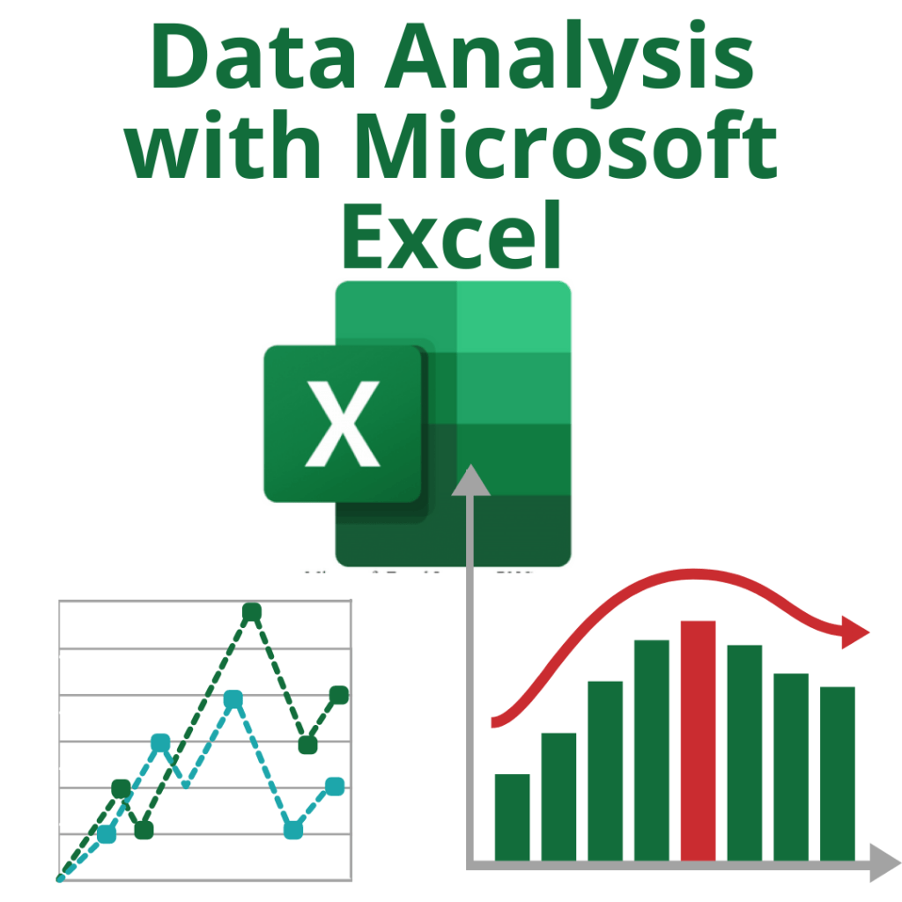
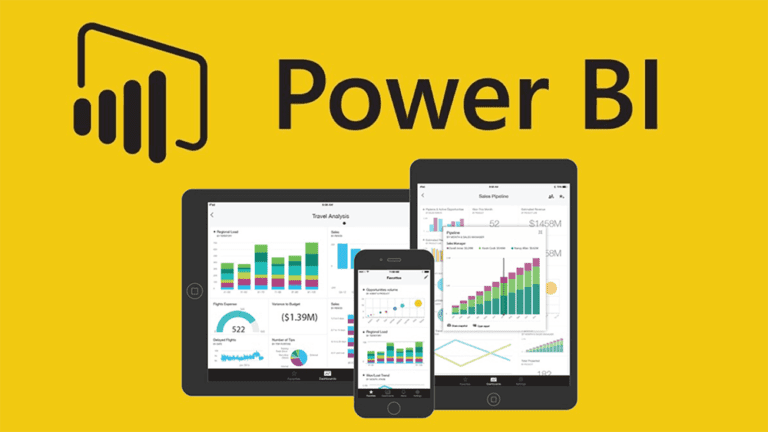

In this project, I've created a dashboard for bike sales in Excel, providing insights into sales trends, customer demographics, and inventory management. It utilizes interactive visuals and data-driven analysis to empower decision-makers with valuable information for optimizing sales strategies and resource allocation.


In this data analytics project, I've developed a coffee order dashboard in Excel. This dashboard offers insights into coffee order trends, customer preferences, and inventory management. It utilizes interactive visuals and data-driven analysis to assist decision-makers in optimizing order strategies and inventory control.
In this data analytics project, I've created a Tableau dashboard for Airbnb. This dashboard provides insights into Airbnb property trends, guest demographics, and pricing strategies. It leverages interactive visuals and data-driven analysis to empower stakeholders with valuable information for optimizing property management and rental strategies.

In this data analytics project, I've developed a Power BI dashboard for survey breakdown analysis.

In this data analytics project, I've undertaken web scraping from Flipkart using Python. This project involves extracting product information and insights from Flipkart's website by utilizing libraries like BeautifulSoup and Requests.
In this data automation project, I've created a Python script that utilizes the Pandas and Matplotlib libraries to automate the extraction and visualization of cryptocurrency data from a website's API. This project involves real-time retrieval of cryptocurrency prices, market trends, and trading volumes, enabling efficient data analysis and visual representation for traders and enthusiasts.
In this data automation project, I've developed a Python-based conversation bot to streamline the college admission process. This bot serves as an interactive platform, assisting prospective students by providing information about admission requirements, deadlines, program details, and answering frequently asked questions. By automating this process, it enhances user experience, reduces manual workload, and improves accessibility for aspiring college applicants.

In this project, initially the face of the users is detected. (registering to our database).After detection the faces are analyzed and trained to get more accurate data of the users. When the collection of users' face data is collected it is stored for the further identification of faces.Later when the user enters the visibility of the camera, the name of the user is sent as a message through WhatsApp, if it is an unknown person it sends a message as an unknown person entered.
In this data analytics project, I've undertaken a movie correlation analysis using Python, Pandas, and Matplotlib. The project involves exploring and visualizing relationships between various movie attributes, such as ratings, genres, and box office performance. By leveraging Pandas for data manipulation and Matplotlib for data visualization, I've created insightful charts and graphs that provide valuable insights into the movie industry's dynamics and audience preferences.